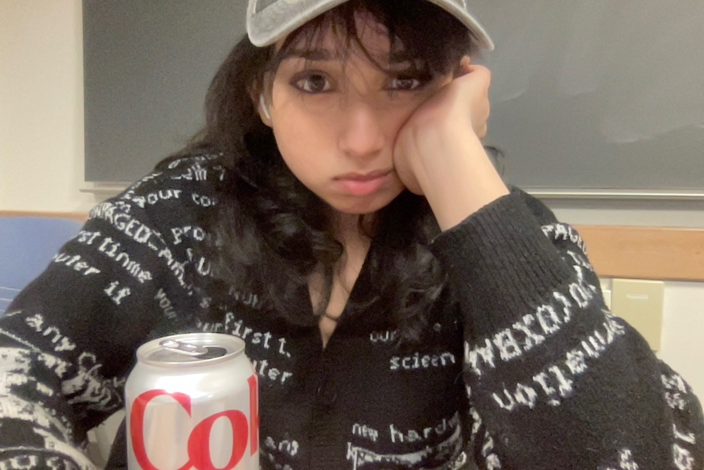

heyy, i'm hansini
ML engineer and statistician
diet coke fiend
i have a master's in applied statistics from cornell and a CS degree from VIT chennai. before CS i seriously considered physics, medicine and journalism (?), and data science ended up being the one field where i didn't have to pick.
i'm most interested in finance and healthcare, but honestly i'll work with just about any dataset you put in front of me. here's my resume, or just say hi.
looking for
- ML engineer
- AI engineer
- data scientist
- data analyst
full time, and happy to relocate.
what i'm up to
loading
featured work
all projectsclick one to open it.
experience
research fellow, applied statistics
building reproducible R and R Markdown analysis workflows across roughly 15,000 event-level records, covering regression, rate estimation and distributional modeling, all version-controlled in Git.
student researcher, applied statistics
cleaning and modeling real research data in R and Python with faculty. the project i liked most compared how large language models and LL.M. law students code hundreds of variables across the world's constitutions.
MPS, applied statistics
linear models, multivariate analysis, neural networks, big data management, and a capstone with the CDC on health survey weighting.
software engineer intern
joined a consumer web platform before launch and built a lot of its front end in HTML, CSS and JavaScript, working directly with the founders on how people would move through the site.
B.Tech, computer science
where i got properly into programming. i also co-authored an IEEE paper here and built the indoor navigation app.
tools i use
languages
Python, R, SQL, SAS, C++, C, Java, JavaScript, Swift, MATLAB
machine learning and deep learning
PyTorch, TensorFlow, scikit-learn, XGBoost, HuggingFace, CNNs, model evaluation and benchmarking, feature engineering
NLP and LLMs
natural language processing, text classification, Sentence-BERT, FinBERT, Anthropic API, prompt engineering, structured extraction, LLM evaluation, Claude Code
computer vision
object detection, YOLOv8, CoreML, on-device inference, sensor fusion, OpenCV, ARKit
statistics and methods
regression, logistic regression, multivariate analysis, probability and inference, experimental design, A/B testing, causal inference, survey weighting (raking, IPW), variance estimation, hypothesis testing
data and analytics
pandas, NumPy, SciPy, statsmodels, Apache Spark and PySpark, MySQL, data cleaning, exploratory data analysis, Excel
visualization
Tableau, Power BI, Matplotlib, ggplot2
computing and tools
Git, Linux, Docker, Jupyter, R Markdown, MPI (mpi4py, OpenMPI), CUDA, parallel computing, LaTeX
"no matter how ridiculous the odds may seem, within us resides the power to overcome these challenges and achieve something beautiful."technoblade